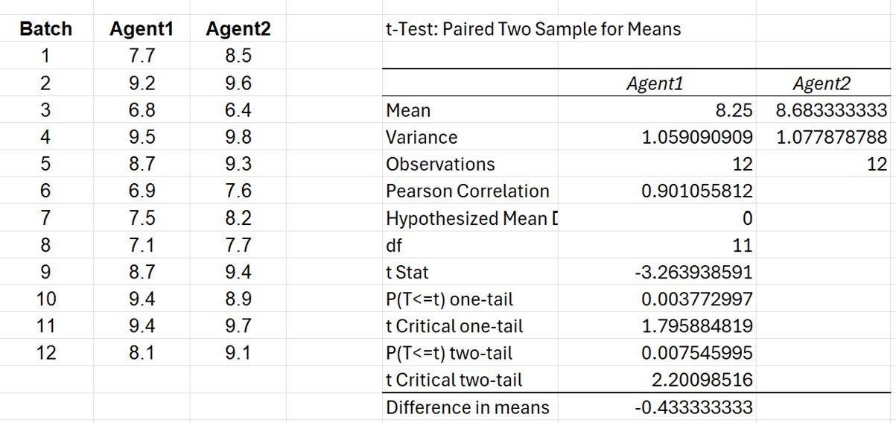
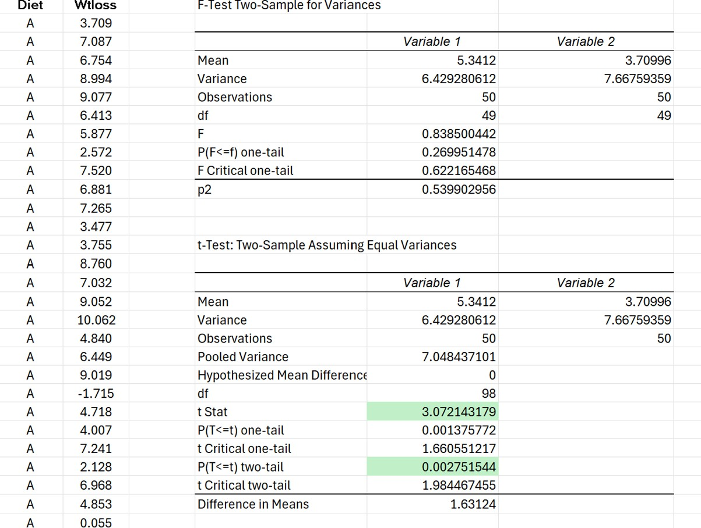
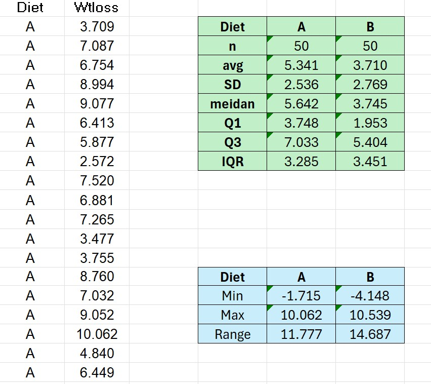
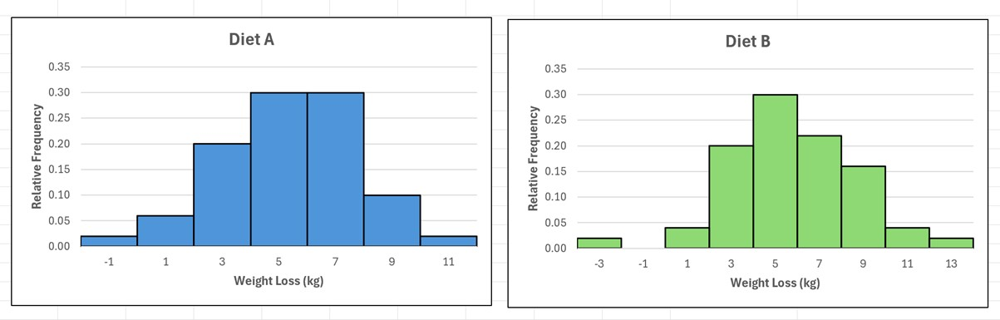
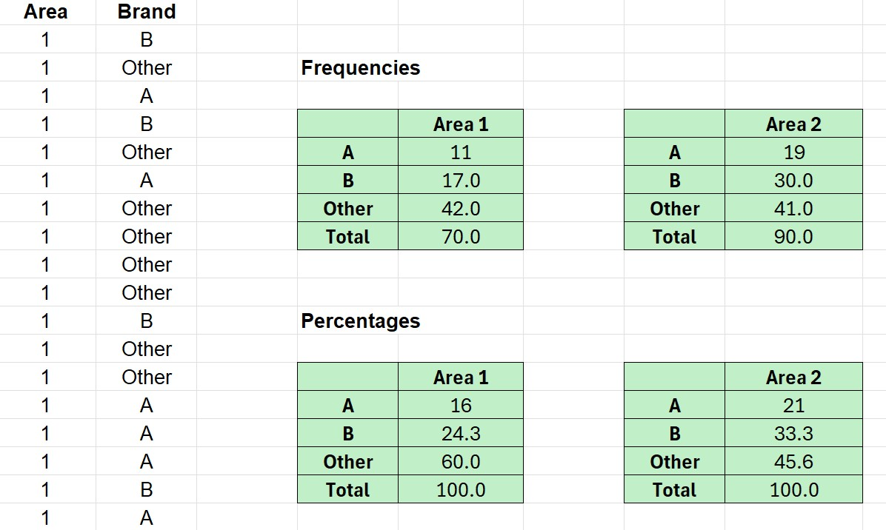
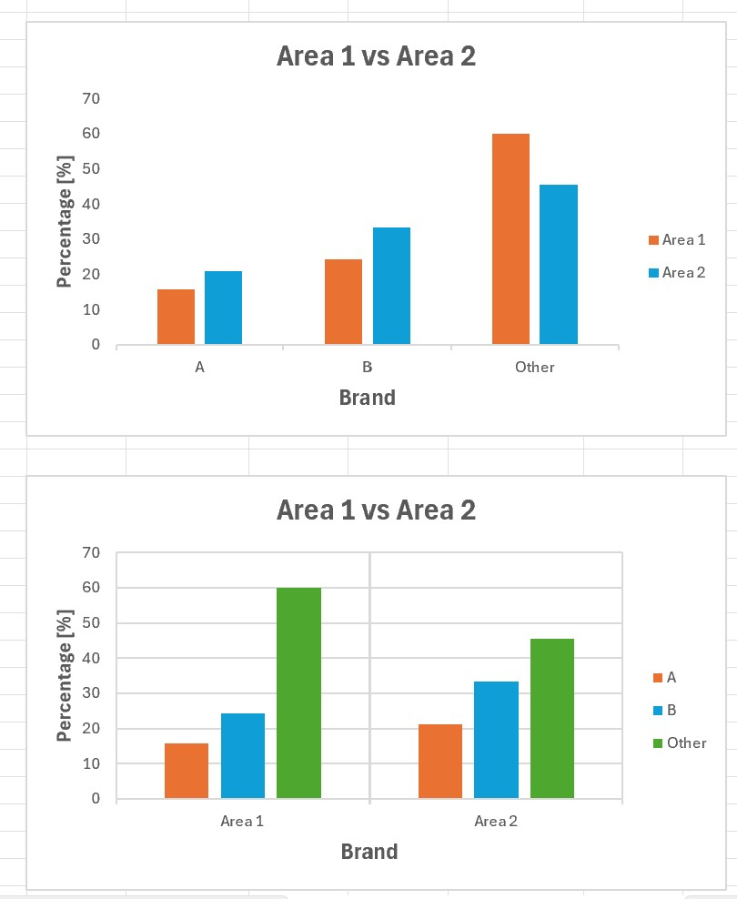
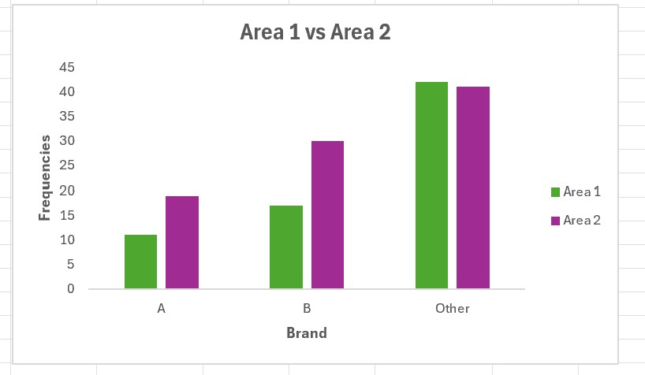
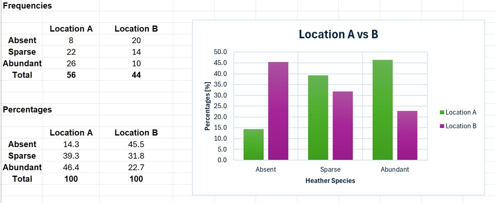

Statistical Workbook

Statistical Workbook
As part of the statistical workbook exercise, we completed several tasks designed to enhance our understanding of key statistical concepts.
These included
- the Related Samples T-Test,
- the Independent Samples T-Test ,
- and summary measures such as percentages and frequencies.
We also reviewed explanatory materials to deepen our understanding of the topics.
The Related Samples T Test

For the Related Samples T Test exercise, I compared the effectiveness of two filtration agents by analysing impurity levels in 12 batches of a chemical product. Since each batch was split between Agent 1 and Agent 2, a paired samples t-test was used.
The mean impurity level after filtration was 8.25 parts per 1000 for Agent 1 and 8.68 for Agent 2. The difference in means was -0.43, indicating that Agent 1 consistently resulted in fewer impurities. The t-statistic was -3.264 with 11 degrees of freedom, and the two-tailed p-value was 0.0075. This result is statistically significant at the 1% level, meaning the observed difference is unlikely to be due to chance. The high Pearson correlation (r = 0.90) between paired values confirms that the differences are meaningful and consistent across batches.
The statistical analysis provides strong evidence that Agent 1 is more effective than Agent 2 in reducing impurities. On average, it left 0.43 fewer parts per 1000 of impurities in the final product.
If we had conducted a one-tailed paired t-test to determine whether Filter Agent 1 is more effective than Agent 2 (whether it leaves less impurity), the conclusion would remain the same. In a one-tailed test, we test for an effect in one specific direction only, in this case, whether Agent 1 leads to significantly lower impurity levels than Agent 2. The one-tailed p-value was 0.0038, which is well below the 0.05 significance level, so we would reject the null hypothesis.
The one-tailed test provides strong evidence that Filter Agent 1 is more effective than Agent 2. It leaves, on average, significantly less impurity in the product.
The Independent Samples T-Test

For The Independent Samples T-Test Exercise I used an independent samples t-test to compare mean weight loss between two separate groups: Diet A and Diet B. Since the groups are independent, this test is appropriate. Before running the t-test, we performed an F-test for equal variances. This step is important because it tells us whether we should use the t-test assuming equal or unequal variances. The result (F = 0.839, p = 0.5399) was not significant, meaning the assumption of equal variances is reasonable. We then ran the t-test assuming equal variances. The output gave t = 3.072, with 98 degrees of freedom and a two-tailed p-value of 0.0028, statistically significant at the 1% level. The average weight loss was 5.341 kg for Diet A and 3.710 kg for Diet B, with a difference of 1.631 kg. This provides strong evidence that Diet A is more effective in reducing weight.

The next exercise, to compare the mean incomes of male and female cardholders, I first performed an F-test for equality of variances. The test result gave F = 1.23 and a two-tailed p-value of 0.436. Since the p-value is greater than 0.05, we do not reject the null hypothesis, which means that the variances of male and female incomes are not significantly different. Therefore, I proceeded with a t-test assuming equal variances to assess whether the average income for males exceeds that of females.
After confirming equal variances with an F-test, I conducted a two-sample t-test assuming equal variances to examine whether there is a significant difference in average income between male and female cardholders. The results showed that the mean income for males was £52.91k, while for females it was £44.23k, resulting in a difference of £8.68k. The calculated t-statistic was 3.27 with 118 degrees of freedom. The two-tailed p-value was 0.0014, which is well below the 0.05 significance level. Since the p-value is statistically significant, we reject the null hypothesis and conclude that there is strong evidence of a difference in average income between male and female cardholders.
Summary Measures

For the Summary Measures exercise, I analysed weight loss data from two diets using summary statistics. For Diet A, the sample size was n = 50, with an average weight loss of 5.341 kg and standard deviation 2.536 kg. Since the mean is more than twice the SD, most participants likely experienced weight loss, suggesting Diet A was effective. In comparison, Diet B also had n = 50, but the average weight loss was 3.710 kg, with a slightly higher SD of 2.769 kg. Median, quartiles, and IQR confirm this trend. Median weight loss for Diet A was 5.642 kg, compared to 3.745 kg for Diet B. The spread (IQR) is similar in both diets, but the overall shift in values is higher for Diet A. The results strongly suggest Diet A is more effective for weight reduction than Diet B.
In terms of distribution, the range of weight loss was slightly larger for Diet B (14.687 kg) compared to Diet A (11.777 kg), indicating greater variability in responses. Both diets included outliers, with minimum values below zero (A: -1.715 kg; B: -4.148 kg), showing that not all participants lost weight.

For Diet A, most participants had weight loss values between 4 and 8 kg. The most frequent class marks were 5 and 7, each with 30% relative frequency. Very few participants had extreme values, with only 2% showing over 10 kg weight loss, or minimal/negative loss.
For Diet B, the distribution is slightly more spread out and skewed. While the most common weight loss was again in the 3 to 5 kg range (30% and 22%, respectively), a larger proportion of participants reported lower weight loss or even weight gain (6% had negative values vs. 2% in Diet A). The frequency of higher weight loss (over 8 kg) is also lower in Diet B than in Diet A.
Both the summary statistics and histogram distributions show that Diet A leads to more consistent and generally higher weight loss, with fewer low-end or negative outcomes. Diet B displays more variation, more cases of minimal or negative weight loss, and fewer high-performing outcomes. This supports the conclusion that Diet A is the more effective option for weight reduction.

To expand previous exercise, I used another dataset and compared brand preferences for breakfast cereals between two demographic areas. In Area 1, the majority (60%) preferred Other brands, while only 16% chose Brand A and 24.3% chose Brand B. In Area 2, preferences were more evenly spread. 33.3% chose Brand B, 21% chose Brand A, and 45.6% preferred Other brands. Brand B is more popular in Area 2 than in Area 1. Meanwhile, Area 1 shows a stronger preference for Other brands. Overall, the patterns of brand preference differ clearly between the two areas.


The bar charts clearly show that brand preference patterns differ between the two demographic areas. In Area 1, the majority of respondents (60%) preferred "Other" brands, while only 24.3% chose Brand B and 16% selected Brand A. In contrast, Area 2 shows a more balanced distribution: Brand B is the most preferred (33.3%), followed by "Other" (45.6%) and Brand A (21%). This suggests that Brand B has a stronger appeal in Area 2, while Area 1 shows a much higher tendency to choose alternative brands. The differences in preference may reflect demographic influences, brand availability, or marketing effectiveness in each area.

To further enhance my understanding of bar charts in Excel, I created an additional comparison chart. The bar chart compares the prevalence of heather species in two locations using three categories: Absent, Sparse, and Abundant. From the chart, it is clear that Location A has a much higher proportion of abundant heather coverage (46.4%) compared to Location B (22.7%). In contrast, heather is absent in 45.5% of cases in Location B, which is significantly higher than in Location A (14.3%). The sparse category shows a more balanced distribution, though still slightly higher in Location A (39.3%) than in Location B (31.8%). The bar chart highlights a strong contrast between the two locations. Location A supports more widespread and abundant growth of heather, while Location B shows a higher rate of absence, indicating less favourable conditions for this species.